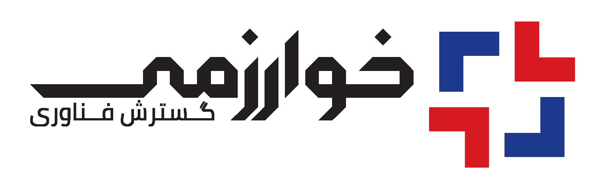

شرکت گسترش فناوری خوارزمی
واحد بهداشت، ایمنی و محیط زیست (HSE)
به پاس تلاش ارزشمند و تعهد حرفهای
لوح تقدیر
نام و نام خانوادگی
بدینوسیله از تلاش مسئولانه، مشارکت مؤثر و اهتمام ارزشمند جنابعالی در ارتقای فرهنگ ایمنی و بهبود شرایط کار در شرکت گسترش فناوری خوارزمی تقدیر و تشکر میگردد.
انتخاب شایسته شما بهعنوان نفر نمونه HSE ماه ................، حاصل توجه به اصول ایمنی، مشارکت در شناسایی و پیشگیری از خطرات و همراهی در توسعه محیط کاری ایمنتر است.
امید است با استمرار این رویکرد ارزشمند، همچنان الگویی مؤثر برای همکاران باشید.
انتخاب شایسته شما بهعنوان نفر نمونه HSE ماه ................، حاصل توجه به اصول ایمنی، مشارکت در شناسایی و پیشگیری از خطرات و همراهی در توسعه محیط کاری ایمنتر است.
امید است با استمرار این رویکرد ارزشمند، همچنان الگویی مؤثر برای همکاران باشید.
دلایل انتخاب در ارزیابی این ماه........................................................